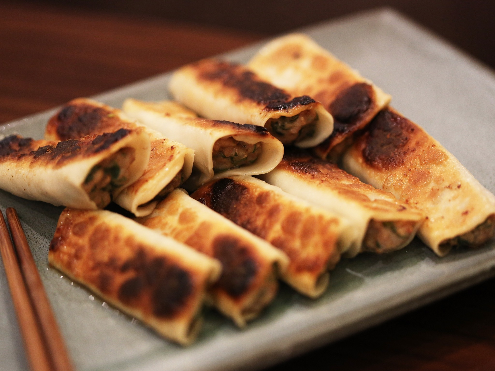

ShanDong MaMa Dumplings

ShanDong Mama's signature Spanish mackerel comes hand mixed in a soft, gingery mousse held together by
potstickers or al dente steamed dumplings, the recipe derived from the coastal town of Yantai in Shandong.
ShanDong MaMa's Dumpling
- 600g Ling cut into chunks
- 2 egg whites
- 6cm ginger
- Corriander stalks
- Garlic chives
- Gow gee wrappers
- 1 tsp salt
- 2 tsp sugar
- S&B salt and pepper mix
- 1 tbsp Chinese cooking wine
- 1 tsp sesame oil
Dipping Sauce Ingredients
- Kombu Tsu
- Red vinegar
- Chilli oil
Dipping Sauce Recipe
- One part Kombu Tsu to Two parts vinegar. Add the desires amount of chilli oil.
ShanDong MaMa's Dumpling Recipe
- Combine the ling, egg whites, ginger in a blender. Emulsify until a mousse like consisteny.Transfer to a bowl.
- Add the chives and Corriander. Mix through, and refridgerate for 30 minutes.
- Using bowl of water and the gow gee wrappers, wet the top section of the wrapper with your fingers. Note These dumpings are not sealed all the way around.
- Place a teaspoon of mixture in the middle of the wrapper. Flatten a little.
- Join and pinch the top of the wrapper so that it seals. There shouls still be an openging either side.
- Store next to each other on a board and squash down a little.
- Using a non stick pan with a lid, add the oil. Place the dumpings on the pan before it gets too hot.
- Its important they are lined up together and are lightly pressed down.
- Once the dumplings start to sizzle, add a little water about a third of the way up the pan. Put the lid on. Allow the water to evaporate,
the dumplings should now be crispy on the bottom and pillowy soft on top.
- The tricky part Grab your serving plate and place upside down on the dumpings. Flip the pan over so the dumplings are presented nicely on your plate with the crispy side up.